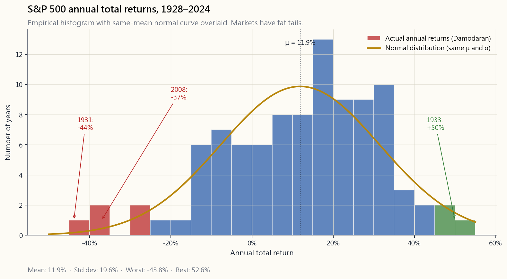
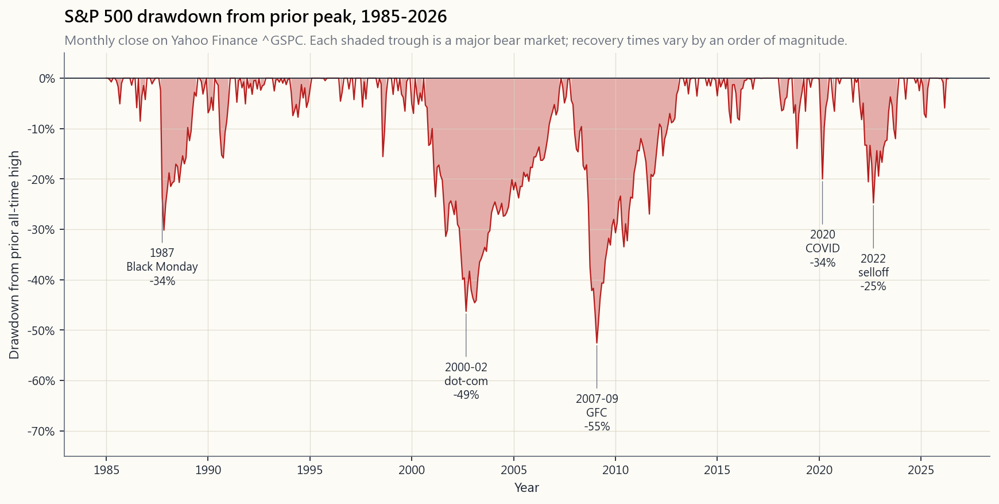
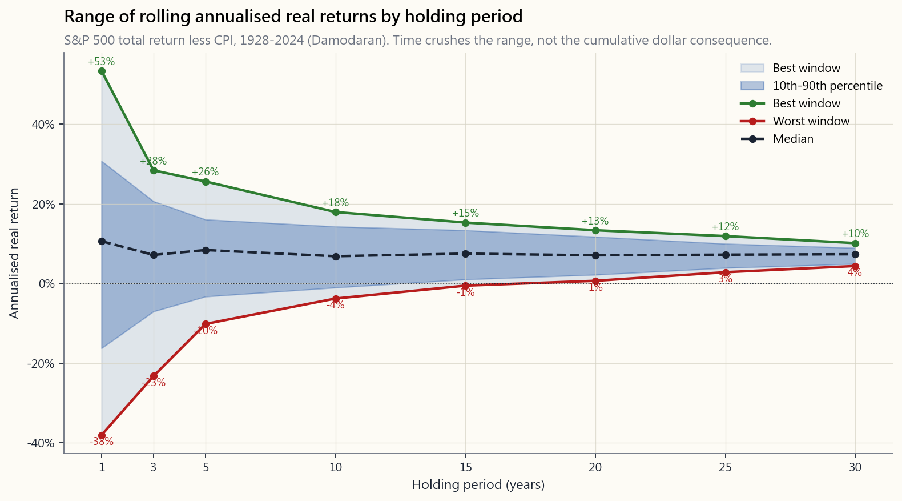

Week 3: Risk and Return — The Two Forces, Honestly Measured
1. Why This Is Important
Last week we landed on a simple prescription: index ETF, automatic monthly transfer, close the app. It works. It also obscures the machinery underneath, and the machinery is what stops you panic-selling the next time the market hands you a 40% drawdown and a dinner-party guest tells you "this time it's different."
Risk and return are the two forces that drive every investment outcome. Most beginners spend all their attention on return — *"how much can I make?" The professional question is the inverse: "how much can I lose, how often, and is that loss survivable?"* If your answer to the second question is "I don't know," you are not investing. You are gambling with extra steps.
This lesson is the foundation for everything that follows. We will look at what risk actually is (and the three things people confuse with it), how to measure it without lying to ourselves, why higher expected return requires higher risk, why the same risk number behaves entirely differently over different horizons, and how the distinction between risk capacity and risk tolerance is the one that gets retirees blown up.
The honest disclaimer up front: **standard textbook treatments of risk assume return distributions look like a bell curve, and they don't.** Markets have fat tails — extreme events happen far more often than the math says they should. We will spend the second half of this lesson on why "5σ event" is a phrase to laugh at, not to plan around.
2. What You Need to Know
2.1 Risk Is Uncertainty of Outcomes — Not Just "Bad"
In everyday English, risk means the chance something bad happens. In finance, risk has a more precise meaning: **risk is the uncertainty of the outcome**. A risky asset is not necessarily one that will lose you money. It is one whose future return you cannot predict.
A three-month US Treasury bill yielding 4.3% is considered nearly risk-free not because the yield is high — it isn't — but because the range of plausible outcomes one quarter from now is essentially "4.3%, plus or minus a fraction of a percent." A single biotech stock is risky because the range one year from now might run from "−90% because the trial failed" to "+400% because the trial succeeded." The T-bill has low uncertainty. The biotech has enormous uncertainty in both directions.
Three things people confuse with risk that aren't:
commonly used — but volatility ≠ risk. A position can be quiet for five years and then blow up in a month (think Long-Term Capital Management, 1998). A position can be loud every day and be structurally bounded (think a deeply hedged options book). Realised price wiggles and risk are not the same thing.
a 50% probability of loss. A coin flip with payouts of −$1 / +$100 has the same 50% probability of loss but is wildly different in risk-adjusted terms. The probability of loss alone tells you nothing about the size of the loss when it comes.
a quantification of anything. Crashes are a feature of equity markets — they happen roughly once per decade, sometimes twice — and an investor who treats every crash as an emergency is going to spend their life selling the bottom.
"Risk comes from not knowing what you're doing." — Warren Buffett
2.2 Standard Deviation — The Workhorse Measure
The most common measure of risk is the standard deviation of returns, often called volatility or "vol." It tells you how widely an asset's actual returns have varied around its mean.
For an asset with average annual return $\mu$ and standard deviation $\sigma$, if returns were normally distributed (a big if; see §2.6):
- About 68% of years would fall in $\mu \pm \sigma$.
- About 95% of years would fall in $\mu \pm 2\sigma$.
- About 99.7% of years would fall in $\mu \pm 3\sigma$.

both directions — the worst years (1931, 1937, 2008) shown in red on the left tail, and the best years (1933, 1954, 1958) shown in green on the right tail, are far further from the centre than a normal distribution predicts.">Three things to read off this chart:
- The centre is roughly 11% per year. That is the long-run nominal
- The standard deviation is roughly 20%. Sixty-eight percent of
- The distribution is wider than a normal curve in both tails.
The headline rule of thumb for asset-class volatility:
| Asset class | Historical annual σ |
|---|---|
| US Treasury bills | ~1% |
| Investment-grade bonds | ~6% |
| US large-cap stocks | ~16–20% |
| US small-cap stocks | ~22–28% |
| Emerging market stocks | ~24–30% |
| Single individual stock | ~30%+ |
| Bitcoin | ~70%+ |
Read the table from the bottom up. Bitcoin is roughly four times as volatile as the S&P 500 — meaning whatever drawdown a bell-curve model says is "extreme" for the index, you should expect roughly four times that for BTC. That is a lot more risk than the headline-friendly "BTC is up 200% this year" suggests.
2.3 Equity Risk Premium — The Compensation for Bearing Risk
The risk premium is the extra return you earn above the risk-free rate for accepting uncertainty. The most-cited number in all of finance is the equity risk premium (ERP): how much more, on average, US stocks return above US Treasury bills.
The inverse framing matters as much as the headline. The textbook calls the T-bill yield the risk-free rate of return. A more honest label — once you measure in purchasing power instead of nominal dollars — is the "return-free risk-free rate": a T-bill guarantees the nominal dollars come back, but it also nearly guarantees you lose ground to inflation, especially in a financial- repression regime where short rates are deliberately held below inflation. Bonds aren't "winning a small amount"; they are certainly losing purchasing power. The ERP is just as well understood as **the discount the volatile asset must offer to clear against an instrument whose downside is the certainty of slow decay.**
The headline numbers also need a regime split, because "long run post-1928" averages four very different monetary regimes into one reassuring number:
| Regime | Window | S&P 500 nominal CAGR | T-bill nominal CAGR |
|---|---|---|---|
| Gold-anchored Bretton Woods | 1928–1971 | ~9.5% | ~2.0% |
| Fiat / disinflation | 1971–2008 | ~11.0% | ~5.7% |
| ZIRP + QE / financial repression | 2009–2024 | ~14.5% | ~0.9% |
| Full sample | 1928–2024 | ~10.5% | ~3.4% |
Read that table carefully. The post-2008 regime — Fed funds pinned at zero from 2009 to 2015 and again 2020–2022, four rounds of quantitative easing, the Fed's balance sheet from $0.9T in 2008 to a peak of $9T in 2022 — produced an S&P CAGR roughly 35% higher than the long-run average, with T-bills returning essentially nothing. Most living retail investors and most index-fund managers built their entire mental model in this single regime. "Stocks return 7% real" is a statement averaged across regimes that have very little to do with each other; the recent regime massively over-paid equity holders while financially repressing the bond holder, and there is no guarantee the next regime resembles either the average or the recent past.
The full-sample arithmetic still impresses: the ~7-point nominal gap compounded over a century turns $1 of T-bills into ~$23 and $1 of stocks into ~$11,000 (real numbers are smaller; the ratio is essentially preserved). Just remember the ratio is built mostly out of three good regimes for stocks; the average should not be confused with the expected value going forward.
Why must the ERP exist? Two equilibrium arguments:
expected return, almost everyone prefers the less volatile one. For investors to willingly hold the volatile one, the price has to fall until the forward expected return is high enough to compensate. That gap is the risk premium.
offered the same expected return, no rational investor would hold stocks; everyone would sell into bonds, prices on stocks would fall, and forward returns would rise — until the gap re-opens. Risk premium is not a moral payment for "being brave"; it is the mechanical equilibrium price of clearing the volatile asset.
A caveat the textbook usually skips: stocks and T-bills are not the same kind of thing, and the model that prices them on a single risk axis hides as much as it reveals. A stock is a perpetual, residual claim on the productive assets and cash flows of a business — its value can grow indefinitely as the business grows. A T-bill is a contractual promise that returns a fixed number of dollars on a fixed date, with no claim on growth and no upside beyond the coupon. "Equally attractive expected returns" comparing these two is comparing apples to a coupon clipped from an apple crate. And the bond side is far less benign than the textbook presents:
- Bond prices are not stable. The 30-year Treasury lost roughly
- **Blue-chip equity is, on a 5-to-10-year window, often less
- A bond locked to maturity carries opportunity cost. Money sat
So treat the "equilibrium price of risk" framing as a useful first lens, not a complete one. The ERP is what the market prices the gap at; whether bonds are actually "safer than blue-chip stocks" for your purposes depends on which kind of risk you are trying to avoid (mark-to-market wiggle, default, purchasing-power loss, sequence-of-returns, opportunity cost) — and these don't all point the same way.
Two cautions, both important:
- The premium is an average over very long horizons. Stocks
- The premium can compress. When stocks have already run up a long
2.4 Systematic vs. Unsystematic Risk
This distinction is the single most important conceptual move in risk management. It determines which risks the market pays you to bear and which risks you are bearing for free.
- Unsystematic (idiosyncratic) risk. Specific to one company, one
- Systematic (market) risk. Affects the whole economy or whole
But the "cannot diversify" line is the canonical CFA answer, and it understates what's actually available. **You can diversify systematic equity risk by holding things that aren't equities.** Long-duration Treasuries rallied as stocks crashed in 2000–02 and 2008. Gold rallied through the 2008 GFC and the 2020 COVID crash. Long-volatility option structures explicitly pay off when equities fall fast. The right way to read "undiversifiable" is therefore undiversifiable inside the equity sleeve — at the multi-asset level, the systematic shock is itself an exposure you can hedge or shape. Week 4 (60/40), Week 6 (gold and commodities), Week 15 (multi-asset construction), Weeks 25–30 (options as exposure tools), and Week 47 (explicit tail-risk hedging) are each a different way of attacking the equity-systematic shock that this paragraph says you "cannot diversify away." The sentence is true only if you've already decided your portfolio is allowed to hold nothing but stocks.
The "free lunch" insight that won Markowitz the Nobel Prize: **since unsystematic risk can be eliminated for free through diversification, the market does not pay you to bear it.** A concentrated five-stock portfolio has much higher total volatility than the index, with the same expected return on the cross-section of all possible five-stock portfolios — but bear in mind unsystematic risk cuts both ways. Some five-stock portfolios in any given decade dramatically beat the index (if four of your five names happened to be Apple, Microsoft, Amazon, Nvidia in 2014); most under-perform substantially; and the average is the index. You aren't "guaranteed to lag" — you are taking on a lottery-ticket distribution around the same mean, where the market doesn't pay you for the spread.
Markowitz's framework is the foundation of **Modern Portfolio Theory (MPT) and the efficient frontier** — the locus of portfolios that maximise expected return for a given variance. Sitting on that frontier, the only risk being borne is systematic; everything below it is leaving free diversification on the table. The full MPT machinery — covariance matrices, mean-variance optimisation, efficient frontier, Capital Market Line — is the toolkit covered in Week 15 (multi-asset construction) and Week 23 (factor investing), with the well-known practical critiques (estimation error in the inputs, fragility to fat tails, breakdown of the covariance matrix in crises). Treat this paragraph as the seed; the formal treatment comes later.
How many names is "diversified"? The Evans & Archer (1968) and Statman (1987) studies — still the standard textbook citations — show the bulk of unsystematic risk reduction comes from the first 15–20 names; the curve of portfolio variance vs number of holdings is steep up to about 20 stocks and almost flat after about 30. Under modern conditions (with mega-cap concentration in the index crowding the names that matter into the top decile), reasonable researchers put the number a bit higher — call it 25–40 names, spread across uncorrelated industries — but the qualitative finding is unchanged: you do not need 500 names to capture ~95% of the diversification benefit, you need *enough names spread across enough industries that no single one moves the portfolio materially*. The S&P 500 buys you the last few percent of marginal diversification; everything north of ~30 well-chosen names is refinement, not breakthrough.
This is the argument for index funds rendered tightly: an index fund holds enough names — and enough sectors — that idiosyncratic risk is essentially zero, leaving you with only the systematic risk that the market actually pays you for. Concentrated stock-picking, unless you have a real edge, is voluntarily accepting a wider spread of outcomes around the same mean. Some pickers will win big. The expected value of being one of them is the same as just buying the index.
2.5 Drawdowns — The Risk That Actually Tests You
Standard deviation is a textbook measure. Maximum drawdown — the peak-to-trough decline of an equity curve — is the measure your nervous system is going to use, whether you like it or not.
Below is the actual S&P 500 drawdown chart from 1950 onward. The shaded peaks are the major bear markets. The number that matters in each case is not the size of the drawdown so much as the *time it took to recover* and the temperament that survival required.

Recovery times (peak-to-new-high), by event:
| Event | Drawdown | Months to bottom | Total round-trip recovery |
|---|---|---|---|
| 1973–74 (oil shock) | −48% | 21 | 7.5 years |
| 1987 Black Monday | −34% | 3 | 2 years |
| 2000–02 dot-com | −49% | 30 | 7 years |
| 2007–09 GFC | −55% | 17 | 5.5 years |
| 2020 COVID | −34% | 1 | 5 months |
| 2022 selloff | −25% | 10 | 2 years |
Two observations from this table that the standard-deviation number does not capture:
- The drawdowns are deeply asymmetric to the up-years. A single
- Recovery time matters as much as drawdown depth. The 2020 COVID
The behavioural lesson is simple. If your investment plan does not survive a 50% drawdown — meaning, you would sell — your plan is already broken. The plan must be built around the drawdown, not despite it.
2.6 Beta — The Slope, Not the Whole Picture
While standard deviation measures total risk, beta measures systematic risk only — the portion of risk that moves with the market.
A formal definition: beta is the slope of the regression of the asset's returns against the market's returns.
$$ \beta_i = \frac{\text{Cov}(r_i, r_M)}{\text{Var}(r_M)} $$
Read the slope, not the formula:
| Beta | What it means |
|---|---|
| 1.0 | Moves with the market — index funds, by construction |
| 1.5 | Moves 50% more than market — typical tech / cyclical stock |
| 0.5 | Moves 50% less — utilities, consumer staples |
| 0.0 | Uncorrelated to market — short-term Treasury bills |
| < 0 | Moves opposite to market — gold sometimes, long volatility |
The Capital Asset Pricing Model (CAPM) uses beta to compute an expected return:
$$ E[r_i] = r_f + \beta_i \cdot (E[r_M] - r_f) $$
In English: an asset's expected return equals the risk-free rate plus the asset's beta times the equity risk premium. CAPM is on every CFA exam and in every textbook. **It is also a description that does not work very well in practice.** Real-world cross-sections of expected return are explained better by other factors (size, value, profitability, momentum) than by beta alone — a finding that launched the entire factor-investing literature, which we cover in Week 23. Treat CAPM as the orthodox starting point that every finance professional understands; treat the factor models as the empirical refinements.
2.7 Time Horizon — Why "Risk" Means Something Different at 1y vs. 30y
One of the most-debated topics in finance is whether stocks become less risky over longer holding periods. The data has a nuanced answer.
Run the historical S&P 500 dataset and compute the worst and best annualised return over rolling holding periods of 1, 5, 10, 20, and 30 years. The picture is striking.

range of plausible annualised outcomes.">Two true things that look contradictory:
- The range of rolling returns narrows dramatically with horizon.
- *The cumulative* dollar consequence of a bad sequence still
The practical implication: **horizon expands what risk you can afford to bear.** A 25-year-old with a stable income and a 40-year investment horizon can run a much higher equity weight than a 65-year-old with a portfolio that has to fund the next 25 years of groceries. The 25-year-old has time to wait out a 50% drawdown; the 65-year-old does not.
A cautionary tale before you over-trust the rolling-return chart. The US dataset is a survivor. Two contemporary stock markets that did not behave like the S&P 500 are sitting in plain sight:
- Japan, 1989–2024. The Nikkei 225 peaked at 38,915 in December
- China A-shares, 2007–present. The Shanghai Composite peaked
The deeper lesson: **a stock market has to bear some honest relationship to the underlying real economy over the long run, and to the legal and political conditions under which minority shareholders actually get paid.** Studying historical price data in isolation — without asking why a market compounded for a century and whether those conditions still hold — is the central methodological error behind "buy and hold for 30 years" applied to any equity market on the planet. The US market's 100-year compounding rests on specific conditions (rule of law, dollar reserve status, productivity growth, demographic expansion, monetary regime). Some of those conditions are visibly weakening in 2026; the conditions that produced Japan's lost decades and China's locked range are not imaginary, just not American — yet.
That is the sequence-of-returns risk that the next paragraph captures. A retiree who experiences a 1973–74 in the first two years of retirement is permanently impaired — every dollar withdrawn during the drawdown removes shares that don't get to compound back. A retiree who experiences the same drawdown 15 years into retirement is barely affected. **Same drawdown. Same return distribution. Different sequence. Different outcome.**
2.8 Risk Capacity vs. Risk Tolerance — The Mismatch That Kills
One last distinction. It is the one most often missed, and it is the one that actually blows up retail portfolios.
Risk capacity — how much risk you can afford to bear, based on objective conditions:
- Time horizon
- Stability of income
- Net worth relative to lifestyle costs
- Insurance and other buffers
- Whether the portfolio funds your living expenses
- How you actually react when you see your account down 30%
- Whether you can sleep through a bear market
- Whether bad portfolio days affect your relationships, your sleep,
The mismatch quadrant is the dangerous one:
| High capacity | Low capacity | |
|---|---|---|
| High tolerance | Match. Take appropriate risk, sleep fine. | Danger zone. "I can handle volatility" + portfolio funds your rent = one bad year wipes you out. |
| Low tolerance | Education problem — you have the time horizon, but emotion drives you out at the bottom. | Match. Conservative positioning is the right answer. |
The two failure modes:
- High tolerance, low capacity. The 67-year-old retiree who
- Low tolerance, high capacity. The 28-year-old engineer with a
The single most useful question to ask yourself before sizing a position: **"If this position dropped 50% next month, would I be a forced seller?"** If the honest answer is yes, the position is too large. Cut it until the answer is no, regardless of what your "tolerance" tells you.
A fair pushback on the question, because the framing is too passive: if you actually knew a position was going to drop 50% next month, the correct response is not "size smaller and absorb it" — it is *hedge the downside, sell the position, or take the other side of the trade*. The question is a sizing tool, not a prediction tool. And the textbook reflex "you can't time the market" needs the adult version: **day-to-day, the market is approximately a random walk; decade-scale macro regime breaks are a slow-moving train wreck that you can see coming if you are paying attention.** A few recent examples retail investors had a real chance to read:
- 2008 Global Financial Crisis. Bear Stearns blew up in March
- 2020 COVID crash. The first COVID-19 cases in Wuhan were
- 2024 Trump–Iran war scare. US carrier strike groups began
None of these were unknowable in advance. None of them required insider information; the relevant data was on the front page of the Wall Street Journal. "You can't time the market" is correct for the day-to-day noise that dominates 95% of trading sessions; it is lazy when applied to visible, slow-moving regime events. The Week 47 (tail risk) and Level 5 framework rebuild this idea properly: pay attention to macro-level signal, hedge before the event rather than after, and accept that occasionally being early is the cost of doing this at all.
"The market can stay irrational longer than you can stay solvent." — John Maynard Keynes (attributed)
2.9 Howard Marks — Risk as the Probability of Permanent Loss, Not as Volatility
Everything above is the standard quantitative apparatus the profession uses: standard deviation, beta, drawdown distributions, the bell curve, the equity risk premium. Howard Marks — co- founder of Oaktree Capital, author of The Most Important Thing and Mastering the Market Cycle — has spent four decades arguing, correctly, that this entire toolbox confuses one observable proxy for the actual thing.
His core claim, in one sentence: **risk is the probability that something bad happens to your capital, not the wiggle of the price chart on the way there.** A position that swings ±30% intra-year but ends every decade higher is less risky than one that grinds quietly upward for nine years and goes to zero in the tenth — even though the standard-deviation calculation will rank them in the opposite order.
Three Marks ideas worth tattooing on the inside of your eyelids:
observed. The reason 2007 felt safe — to almost everyone — was that risk had been compounding inside the system for years without showing up in volatility. Mortgage spreads were tight, VIX was low, every model said the world was calm. The risk was maximal precisely because it was invisible. By the time it shows up in the volatility number, the trade is already lost. Conversely, the moments of maximum fear are usually moments of minimum risk: forced selling has crushed prices below intrinsic value, the marginal seller has already sold, and the forward expected return is at its highest. Marks formalised this with his risk-distribution diagram:
- The textbook capital-market line plots a single expected
- Marks's diagram replaces each point on that line with a
- The honest reading: **moving right on the risk axis does not
![Howard Marks's risk-distribution diagram. The horizontal axis is risk; the vertical axis is return. The textbook capital-market line is shown as a thin upward-sloping line. Overlaid at each level of risk is a vertical probability distribution — narrow and centred on the line at low risk, progressively wider and more left-skewed as risk rises. At T-bill risk the distribution is a tight spike. At broad-equity risk it is a wide bell with a visible left tail. At venture/speculative risk it is a very wide distribution where the left tail extends to total loss. The diagram makes the point that](image/week03_marks_risk_distribution.png)
not be wiped out.* Marks calls this survival first*. A 50% loss requires a 100% gain to recover. A 90% loss requires a 900% gain. A 100% loss requires a miracle. The asymmetry of loss recovery means that any strategy that can blow up — even with a 1% annual probability — will, on a long enough timeline, blow up. *"In order to win the game, you have to be there at the end."* Position sizing, leverage discipline, and tail-risk awareness are not topics added on top of a return-maximising strategy. They are the prerequisites without which return maximisation is gambling.
decision can have a bad outcome (rolled snake-eyes), and a bad decision can have a good outcome (the drunk who got home safely). Most retail investors evaluate themselves by P&L, which means they reward the bad decisions that happened to work and punish the good decisions that happened to lose. The professional question is *given the information at the time, was the position appropriately sized for its risk-adjusted expected return?* That question is answerable independent of the outcome. P&L is the noisy proxy; process is the signal.
The connection to everything above: **standard deviation, beta, and the bell curve are useful summaries of visible risk in ordinary market regimes.** They are systematically blind to the risk Marks is describing — latent, regime-conditional, asymmetric, and most dangerous when it is most invisible. The honest framework holds both views at once: use the quantitative tools to measure what you can, and use Marks's framing to remember that the number on the screen is not the thing itself, and that *the goal of the exercise is to still be in the game ten years from now.*
"Risk means more things can happen than will happen." — Elroy Dimson, quoted by Howard Marks "The riskiest things are the ones everyone thinks are safe." — Howard Marks "You can't predict. You can prepare." — Howard Marks
3. Common Misconceptions
Misconception 1: "Higher risk always means higher return."
Higher risk means higher expected return *for the asset class as a whole*, on long horizons. It does not mean higher return for any individual position. A single biotech stock is extremely risky and may return nothing if its trial fails. The risk premium applies to diversified bearers of systematic risk; concentrated positions in single names accept enormous idiosyncratic risk that the market does not pay you to bear. Risk and expected return scale together at the asset-class level, not at the single-position level.
More importantly, the goal of an active retail investor is not to take more risk for more return — it is to find **asymmetric trades**: payoffs where the upside is meaningfully larger than the downside, where you are positioned for a fat tail without having to fund it with a fat-tailed downside of your own. The barbell shape (Week 47, Level 5) is the cleanest expression: one end is high-conviction safety with little or no downside; the other end is asymmetric speculation with capped downside (long calls, long volatility, structured option positions) and uncapped upside. "Higher risk = higher return" is the passive paraphrase. The active paraphrase is *find the rare structures where the cap on downside lets the upside compound, and skip the symmetric trades that the textbook is describing.* This course teaches the textbook first because you cannot critique what you do not know — but the long-term goal of the course is the asymmetric trade, not the symmetric one.
Misconception 2: "If I just hold long enough, stocks always go up."
US stocks have always recovered eventually, but "eventually" can mean seven to fifteen years. Japanese stocks peaked in 1989 and did not surpass that level until 2024 — a 35-year wait. There is also a survivorship bias problem: we study the US market because it became the most successful equity market of the 20th century. China, Russia, Argentina, Egypt all had thriving exchanges in 1900 and delivered −100% real returns over the subsequent century. "Stocks for the long run" is true on the measured sample. The sample is US-conditional.
Misconception 3: "Standard deviation captures all the risk."
It captures Gaussian risk under the assumption that returns are normally distributed. They are not. Markets have fat tails — extreme moves happen far more often than the bell-curve model predicts. The 2008 crash was, by Gaussian arithmetic, a roughly 5σ event, which a normal distribution says should occur once every ~14,000 years. It happened. So did 1987 (a 22σ event under the prevailing models). The standard deviation of the body of the distribution does not predict the size or frequency of the tails. This is why we will spend Week 47 on tail-risk hedging instead of trusting the bell curve to size positions.
Misconception 4: "Bonds are safe."
Bonds are less volatile than stocks. They are not risk-free. Long bonds lost roughly 30% of their value in 2022 alone — that is a larger drawdown than the median equity bear market. Bond holders also face inflation risk (a 4% bond in a 6% real-inflation environment loses purchasing power even while paying a positive nominal yield) and credit risk (the issuer defaults). The 1982–2020 bond bull market trained an entire generation of investors and advisors to think of "bonds" and "safety" as synonyms. They are not, and the regime that made them feel synonymous has reversed.
Misconception 5: "Low realised volatility means low risk."
Sometimes. Sometimes not. Bernie Madoff's fund showed implausibly low volatility and steady returns from 1992 onward — *because the returns were fabricated*. Long-Term Capital Management's strategy ran with extremely low realised volatility for years before blowing up over a single quarter in 1998 and requiring a Federal Reserve- coordinated bailout. Realised volatility is one observation window; risk is the full distribution of possible outcomes, including the ones that haven't happened yet. Low vol can be a trap — the calm before the regime break.
Misconception 6: "Risk tolerance is a fixed personality trait."
It moves with experience, with portfolio size, and with life stage. A 25-year-old who has never seen a bear market often discovers, in their first one, that the tolerance they self-reported on their brokerage's questionnaire was theoretical. The same person ten years later, having watched two drawdowns recover, sleeps through a third without thinking about it. Tolerance is built, not declared.
**Misconception 7: "Diversification means owning lots of different funds."**
Diversification is about owning uncorrelated exposures. Owning ten US large-cap funds run by ten different managers gives you almost nothing — they all hold roughly the same names with the same betas and they all fall together. Owning a US equity fund, a long Treasury fund, gold, and a long-volatility hedge gives you real diversification because the assets respond differently to the same macro shocks. Number-of-funds is a vanity metric. Number-of-distinct- risk-factors is the real one.
4. Q&A
**Q1: If I can never get rid of systematic risk, why bother diversifying within equities?**
A: To eliminate the unsystematic risk you are not paid to bear. The textbook example — "a five-stock portfolio has the same expected return as the index but more total risk" — comes out of the Evans & Archer (1968) and Statman (1987) studies, where they computed the average portfolio variance across thousands of randomly drawn five-, ten-, twenty-stock portfolios. Average is the operative word. In reality, no individual five-stock portfolio has the same return as the index — most under-perform, a small minority massively over-perform, and only the cross-sectional mean equals the index. The statistical argument is correct on the expectation; the realised path of any single five-stock portfolio is a draw from a much wider distribution. The market doesn't pay you for sitting in that wide distribution. Hold ~25–40 well-spread names (or just buy the index) and you collect ~95% of the diversification benefit without the lottery-ticket variance.
**Q2: Bitcoin's volatility is 70%+. Does the same risk-premium logic apply?**
A: In principle yes — bitcoin's expected return must be high enough to clear at its volatility. In practice, bitcoin's expected return is not knowable from price history alone because the asset is too young and its monetary regime is still being negotiated. Standard risk-premium math uses 100 years of data to triangulate the equity premium — and that itself is a weaker exercise than it sounds. The equity from 100 years ago, 50 years ago, and today is materially not the same security: post-1971 the dollar left the gold standard and the entire monetary regime changed; post-2008 zero-rate policy and QE produced a structural bid for risk assets that did not exist in earlier decades; tax law, market microstructure (electronic trading, ETFs, 0DTE options), and the dominant marginal participant (passive flow vs active stock-picking) have all flipped within the sample. Aggregating across regime changes that fundamental gives you an average over different securities, not a stable estimate of the same one. For bitcoin you have 15 years, of which the first 8 were near-zero adoption and the last 7 are the entire price history. Apply the framework, but don't pretend the standard error on either estimate is small.
Q3: How do I estimate my own risk tolerance honestly?
A: Two steps, in order. First, take an honest capacity assessment: horizon, income stability, dependence of living expenses on the portfolio. Second, take a small allocation to a volatile asset and see how you actually feel during a drawdown. Self-reported risk tolerance from a brokerage questionnaire correlates poorly with behaviour in a real bear market. Tolerance is observed, not declared.
**Q4: Why is 60/40 the conventional portfolio if bonds aren't a reliable inflation hedge anymore?**
A: 60/40 was built around a specific 40-year window (1982–2020) in which (a) bonds yielded above inflation and (b) bonds rallied when stocks fell. Both broke in 2022, when stocks and bonds fell roughly 20% together. The conventional 60/40 is a legacy allocation matching a legacy regime. Modern equivalents replace some or all of the bond sleeve with cash, gold, and long-volatility hedges (Week 47, Level 5).
**Q5: What is the most useful single risk number for a retail investor?**
A: Maximum drawdown of the strategy you are running, sized to your portfolio. Multiply your portfolio value by 0.5 (a plausible once-per-decade equity drawdown), and ask whether the dollar amount that you would see in red on the screen would force you into bad decisions. If yes, you are over-allocated to risk. If no, you can proceed.
**Q6: Why does the textbook keep using the standard deviation if it's not great?**
A: Because it has nice mathematical properties (additive under linear combinations, easy to estimate from data, well-behaved in models), not because it captures the risk that matters. The standard deviation is a useful summary of the central body of the distribution. It is inadequate as a descriptor of the tails, which is exactly where the losses you remember actually live. The honest professional uses standard deviation plus drawdown plus tail-event analysis — never any one alone.
Q7: Is volatility a good or bad thing for an investor?
A: For a buyer who is dollar-cost averaging in over years, mild volatility is mildly good (you buy at a discount during dips). For a holder who is sitting on accumulated wealth, volatility is mostly the cost of doing business — not "bad" in expectation, but the emotional load you carry. For a seller in decumulation, volatility is genuinely costly because of sequence-of-returns risk. The same number means different things at different life stages.
And once options enter the toolkit, **volatility itself is an asset class** — not just a risk to be borne. Implied volatility on listed options trades and re-prices independently of the underlying; a long-volatility position can compound through equity drawdowns that decimate buy-and-hold portfolios. Weeks 25–30 introduce the option mechanics, Week 29 covers the Greeks (vega is the direct exposure to volatility), and Week 47 builds a long-volatility tail-hedge sleeve as a permanent allocation rather than a tactical trade — Week 47 introduces a Dragon-portfolio-inspired shape that makes long-volatility a permanent sleeve. "Vol is good or bad?" is the wrong question once you can buy and sell it directly; the right question is *what regime is vol in, and what side am I on*.
Q8: What does "fat tails" actually mean for sizing my positions?
A: Whatever drawdown a normal-distribution model says is "extreme" — size as if a drawdown twice that depth is genuinely possible. The 2008 GFC was a 5σ event under the prevailing risk models; planning to survive a 5σ event of the right magnitude (so, ~50% on US large cap rather than ~25% the model predicted) is what kept investors in the game. The shorthand: *plan for half-off, every decade, no warning.*
**Q9: How does a "barbell" shape relate to standard deviation?**
A: The barbell exploits the fat-tailed distribution. By holding high-conviction safety on one end (short-Treasuries, gold, cash) and asymmetric speculation with capped downside on the other (long calls, long-vol structures), the resulting portfolio has a higher arithmetic standard deviation than a passively-diversified core but a better drawdown profile and a better response to tail events. The standard deviation alone makes it look "riskier"; the drawdown distribution shows it actually isn't. This is a Week 14 / Level 5 topic but the framing matters for how you read this lesson.
Q10: How does this lesson connect to the rest of the course?
A: Risk and return are the foundation under everything that follows. Week 4 (60/40) and Week 11 (rebalancing as behavioural discipline) are exercises in shaping the risk profile of a multi-asset portfolio. Week 13 onwards (long/short, pair trading) are about removing systematic risk and isolating specific bets. Weeks 25–30 (options) are the toolkit for expressing risk asymmetrically. Week 47 (tail risk) is the explicit treatment of the fat-tail problem this lesson opened. Every subsequent strategy will be evaluated on its risk profile — not just its return.
The interactive demo on the website extends this lesson with a holding-period explorer: a slider lets you choose any rolling window from 1 to 30 years, and the chart shows the historical distribution of annualised real returns for that window — best, worst, median, and the odds of ending up below zero. The shape of the distribution at 1 year and 20 years is essentially the §2.7 chart, but you can slide between them and watch the tails close.
The file tmprlclltpc.md does not exist in the temp directory. The file may have already been deleted or the path is incorrect. Please verify the file path and try again.
Week 8: Bond Basics — What Are Bonds and How Do They Work?
Course: Beginner's Guide to Investing Format: YouTube script Host: Horace (on camera) + Stella (voice) Duration: ~15 minutes
[VISUAL: Intro animation plays]
Horace: Hey everyone, welcome back! Last week we covered stocks — today we're diving into the world of bonds. Don't worry if this sounds complicated — by the end of this video, you'll understand exactly what bonds are and why investors use them.
Stella: And bonds are actually one of the most important parts of a complete investment portfolio. So let's get into it!
Horace: So — what is a bond? A bond is a loan. But instead of borrowing from a bank, a government or company borrows money directly from investors — and that's you.
[VISUAL: Show animation: animation/week08_bond_basics.py scene "intro_loan"]
Stella: When you buy a bond, you're the lender. The bond issuer — whether that's the U.S. government, a city, or a corporation — is the borrower. They promise to pay you back the loan amount after a set period of time, plus regular interest payments along the way.
Horace: That loan repayment amount is called the face value or par value — it's usually $1,000 per bond. The regular interest payments are called coupon payments. And the length of the loan is called the maturity — which could be 2 years, 10 years, even 30 years.
Stella: So let's say you buy a 10-year bond with a face value of $1,000 and a coupon rate of 5%. That means you'll receive $50 every year for 10 years, and then at the end, you get your $1,000 back.
[VISUAL: Show animation: animation/week08_bond_basics.py scene "coupon_cashflows"]
Horace: Simple enough, right? Now let's talk about the different types of bonds.
Part 2: Types of Bonds
Horace: Bonds come in three main types — government bonds, corporate bonds, and municipal bonds.
[VISUAL: Show three-column table or graphic]
Stella: First, there are government bonds — also called Treasuries in the U.S. These are issued by the federal government. They're considered the safest bonds because the U.S. government has never defaulted on its debt. Examples include T-bills, T-notes, and T-bonds, depending on their maturity.
Horace: Second, corporate bonds — issued by companies. A company like Apple or Ford might issue a bond to raise money for a new project or expansion. Because companies are riskier than the government, they pay higher interest rates to attract investors.
Stella: Third, municipal bonds — issued by states, cities, or local governments. These are used to fund things like schools, highways, and hospitals. One big advantage: the interest is often tax-exempt at the federal level.
[VISUAL: Show animation: animation/week08_bond_basics.py scene "bond_types_comparison"]
Horace: The riskier the bond issuer, the higher the interest rate they have to offer — that's the deal investors demand. We'll talk more about risk and credit ratings in Part 4.
Part 3: How Bond Prices Work
Horace: Okay, here's where it gets interesting. Bond prices and interest rates move in opposite directions. This is one of the most important concepts in fixed income investing.
[VISUAL: Show animation: animation/week08_bond_basics.py scene "price_yield_seesaw"]
Stella: Let me explain. Imagine you own a bond that pays 3% interest. Then interest rates in the market rise to 5%. Now, new bonds are paying 5%, but yours is only paying 3%. Who wants your bond? Nobody — unless you sell it at a discount. So your bond's price drops.
Horace: The reverse is also true. If rates fall, your 3% bond looks more attractive than new bonds paying only 2%. So your bond becomes more valuable — its price goes up.
Stella: This is why bond prices fluctuate in the market, even though the coupon payments are fixed. The yield — which is the return you actually get based on the price you paid — adjusts to reflect current market conditions.
Horace: There's also a concept called yield to maturity — or YTM — which is the total return you'd get if you held the bond all the way to maturity. It factors in the coupon payments AND any difference between the price you paid and the face value.
[VISUAL: Show animation: animation/week08_bond_basics.py scene "ytm_explained"]
Stella: The key takeaway: when you hear "interest rates went up," that means bond prices went down. When rates go down, bond prices go up.
Part 4: Credit Ratings and Risk
Horace: Not all bonds are created equal. The risk of a bond depends heavily on the creditworthiness of the issuer — can they actually pay you back?
Stella: That's where credit ratings come in. Agencies like Moody's, S&P, and Fitch rate bond issuers based on their financial health. The ratings go from AAA — the highest quality — all the way down to D, which means the issuer has already defaulted.
[VISUAL: Show animation: animation/week08_bond_basics.py scene "credit_rating_scale"]
Horace: Bonds rated BBB or above are called investment grade. Bonds below that are called high yield bonds — or more colorfully, junk bonds. They pay higher interest because the risk of default is higher.
Stella: This creates a tradeoff: higher risk equals higher potential return, but also a greater chance you might not get your money back.
Horace: As a rule of thumb — government bonds have the lowest risk. Investment-grade corporate bonds are in the middle. And high-yield bonds carry the most risk.
[VISUAL: Risk spectrum graphic from low to high]
Part 5: Bonds in a Portfolio
Horace: So why would you include bonds in your investment portfolio?
Stella: Three main reasons: income, stability, and diversification.
[VISUAL: Show animation: animation/week08_bond_basics.py scene "bonds_in_portfolio"]
Horace: Bonds provide income through their regular coupon payments. If you need predictable cash flow — like in retirement — bonds can be a great source.
Stella: Bonds also add stability to a portfolio. They're generally less volatile than stocks. During stock market crashes, bonds often hold their value or even go up — especially government bonds, which investors flock to in times of uncertainty.
Horace: And diversification — because bonds often move differently from stocks, adding bonds to a stock portfolio can reduce your overall risk without giving up too much return.
Stella: The classic "60/40 portfolio" — 60% stocks and 40% bonds — has been a standard recommendation for balanced investors for decades.
[VISUAL: Pie chart showing 60/40 split]
Horace: Of course, the right mix depends on your age, goals, and risk tolerance. Younger investors might hold more stocks; people nearing retirement might shift toward more bonds.
Part 6: How to Invest in Bonds
Horace: Alright, so how do you actually buy bonds?
Stella: You have a few options. First, you can buy individual bonds directly — through a broker or through TreasuryDirect.gov for U.S. government bonds.
Horace: Second, you can buy a bond ETF — an ETF that holds a basket of bonds. This gives you instant diversification and is easy to trade on a stock exchange, just like a stock.
Stella: Third, you can buy a bond mutual fund — similar to a bond ETF, but priced once a day instead of trading throughout the day.
[VISUAL: Show animation: animation/week08_bond_basics.py scene "how_to_buy_bonds"]
Horace: For most beginning investors, bond ETFs are the simplest and most cost-effective option. Look for funds with low expense ratios and broad diversification.
Stella: Some popular examples include funds that track the total U.S. bond market, short-term Treasury funds, and inflation-protected bonds, known as TIPS.
Part 7: Common Mistakes to Avoid
Horace: Let's wrap up with a few common mistakes beginners make with bonds.
Stella: Mistake number one: ignoring duration. Duration measures how sensitive a bond's price is to interest rate changes. Longer-duration bonds drop more in price when rates rise. If you're worried about rising rates, stick to shorter-duration bonds.
Horace: Mistake number two: chasing yield. It's tempting to buy the highest-yielding bond you can find. But remember — high yield means high risk. Make sure you understand WHY a bond is paying so much.
Stella: Mistake number three: not considering taxes. Interest from corporate and government bonds is generally taxable. But municipal bonds may be tax-exempt. If you're in a high tax bracket, munis might be more attractive than they first appear.
Horace: Mistake number four: selling too early. If you buy a bond and interest rates rise, the price drops — but if you hold to maturity, you'll still get your full face value back. Don't panic sell.
[VISUAL: Show animation: animation/week08_bond_basics.py scene "common_mistakes"]
Conclusion
Horace: Alright, let's bring it all together. Bonds are loans you make to governments or companies in exchange for regular interest payments and the return of your principal at maturity.
Stella: The key things to remember: bond prices move opposite to interest rates. Credit ratings tell you how risky a bond is. And bonds can add income, stability, and diversification to your portfolio.
Horace: Next week, we'll dive deeper into bond strategies — including how to build a bond ladder and how to use bonds to manage interest rate risk.
Stella: If you found this video helpful, please like and subscribe — it really helps us reach more people who are trying to learn about investing!
Horace: See you next week!
[VISUAL: End screen with subscribe button and links to previous episodes]
Summary Table
| Concept | Key Point |
|---|---|
| Bond | A loan to a government or company |
| Face value / Par value | The amount repaid at maturity (usually $1,000) |
| Coupon | Regular interest payment |
| Maturity | When the bond expires and principal is repaid |
| Yield | The return based on current price |
| Yield to maturity | Total return if held to maturity |
| Credit rating | Measures issuer's ability to repay |
| Investment grade | Lower-risk bonds (BBB and above) |
| High yield / Junk | Higher-risk, higher-return bonds |
| Duration | Price sensitivity to interest rate changes |
第八週：債券入門 — 債券是什麼？如何運作？
課程： 投資入門指南 格式： YouTube 腳本 主持人： 陳馬（鏡頭前）+ 小魚（配音） 時長： 約 15 分鐘
[VISUAL: Intro animation plays]
陳馬： 大家好，歡迎回來！上週我們聊了股票 — 今天我們要進入債券的世界。不用擔心這聽起來很複雜 — 看完這支影片，你就會完全了解債券是什麼，以及投資人為什麼要用它。
小魚： 而且債券其實是完整投資組合中最重要的一環。那我們就開始吧！
陳馬： 那麼 — 什麼是債券？債券就是一種借貸。但不是跟銀行借錢，而是政府或企業直接向投資人借錢 — 也就是向你借。
[VISUAL: Show animation: animation/week08_bond_basics.py scene "intro_loan"]
小魚： 當你買入一張債券，你就是放款方。債券發行人 — 不管是美國政府、某個城市，還是一家公司 — 就是借款方。他們承諾在一段時間後還給你本金，並在這段期間定期支付利息。
陳馬： 這個到期償還的金額稱為面值或票面價值 — 通常每張債券是 1,000 美元。定期支付的利息稱為票面利率支付。而借款的期限稱為到期日 — 可能是 2 年、10 年，甚至 30 年。
小魚： 舉個例子，假設你買了一張 10 年期債券，面值 1,000 美元，票面利率 5%。這代表你每年可以收到 50 美元，持續 10 年，最後還能拿回 1,000 美元的本金。
[VISUAL: Show animation: animation/week08_bond_basics.py scene "coupon_cashflows"]
陳馬： 很簡單吧？現在我們來聊聊不同種類的債券。
第二部分：債券的種類
陳馬： 債券主要分三大類 — 政府公債、公司債，以及市政債券。
[VISUAL: Show three-column table or graphic]
小魚： 第一類是政府公債 — 在美國也叫做國庫券。這是由聯邦政府發行的，被認為是最安全的債券，因為美國政府從未發生過違約。依到期期限不同，分為短期國庫券、中期公債和長期公債。
陳馬： 第二類是公司債 — 由企業發行。像蘋果或福特這樣的公司可能會發行債券，為新專案或擴張計畫籌資。因為企業的風險高於政府，所以必須提供更高的利率來吸引投資人。
小魚： 第三類是市政債券 — 由州政府、城市或地方政府發行，用來為學校、公路和醫院等建設籌資。一大優勢是：這類債券的利息在聯邦層級通常享有免稅待遇。
[VISUAL: Show animation: animation/week08_bond_basics.py scene "bond_types_comparison"]
陳馬： 債券發行人風險愈高，就必須提供愈高的利率 — 這是投資人要求的條件。我們在第四部分會進一步談風險和信用評等。
第三部分：債券價格如何運作
陳馬： 好，接下來進入有趣的部分。債券價格和利率的走向是相反的。這是固定收益投資中最重要的概念之一。
[VISUAL: Show animation: animation/week08_bond_basics.py scene "price_yield_seesaw"]
小魚： 讓我來解釋。假設你持有一張支付 3% 利息的債券。然後市場利率上升到 5%。現在新發行的債券支付 5%，但你的只有 3%。誰會想要你的債券？沒有人 — 除非你以折價賣出。所以你的債券價格就會下跌。
陳馬： 反過來也一樣。如果利率下降，你那 3% 的債券比起只支付 2% 的新債券就更有吸引力。所以你的債券變得更有價值 — 價格上漲。
小魚： 這就是為什麼債券價格會在市場上波動，即使票面利率是固定的。殖利率 — 也就是依照你付出的價格所能獲得的實際報酬 — 會隨著市場狀況調整。
陳馬： 還有一個概念叫做到期殖利率 — 也就是 YTM — 這是假設你持有債券直到到期日所能獲得的總報酬。它同時考慮了票面利率支付，以及你購買價格與面值之間的差額。
[VISUAL: Show animation: animation/week08_bond_basics.py scene "ytm_explained"]
小魚： 關鍵重點：當你聽到「利率上升」，就代表債券價格下跌。當利率下降，債券價格就上漲。
第四部分：信用評等與風險
陳馬： 並非所有債券都一樣。債券的風險很大程度取決於發行人的信用狀況 — 他們真的有能力還款嗎？
小魚： 這就是信用評等的用途。穆迪、標普和惠譽等評等機構根據債券發行人的財務狀況進行評等。評等從 AAA — 最高品質 — 一路到 D，代表發行人已經違約。
[VISUAL: Show animation: animation/week08_bond_basics.py scene "credit_rating_scale"]
陳馬： 評等在 BBB 以上的債券稱為投資等級債券。評等在此以下的稱為高收益債券 — 或者更生動地說，垃圾債券。它們支付更高的利息，因為違約風險更高。
小魚： 這形成了一個取捨：風險越高，潛在報酬越高，但拿不回本金的可能性也越大。
陳馬： 大原則是 — 政府公債風險最低。投資等級公司債居中。而高收益債券風險最高。
[VISUAL: Risk spectrum graphic from low to high]
第五部分：債券在投資組合中的角色
陳馬： 那麼，為什麼要在投資組合中納入債券呢？
小魚： 主要有三個原因：收益、穩定性，以及分散投資。
[VISUAL: Show animation: animation/week08_bond_basics.py scene "bonds_in_portfolio"]
陳馬： 債券透過定期的票面利率支付提供收益。如果你需要可預期的現金流 — 例如退休之後 — 債券可以是很好的來源。
小魚： 債券也能為投資組合增添穩定性。它們通常比股票的波動性低。在股市崩盤時，債券往往能維持價值，甚至上漲 — 尤其是政府公債，在動盪時期會吸引資金湧入。
陳馬： 還有分散投資 — 因為債券的走勢通常與股票不同，在股票投資組合中加入債券，可以在不犧牲太多報酬的情況下降低整體風險。
小魚： 經典的「六四投資組合」— 60% 股票加 40% 債券 — 幾十年來一直是穩健型投資人的標準建議。
[VISUAL: Pie chart showing 60/40 split]
陳馬： 當然，最適合的比例還是取決於你的年齡、目標和風險承受能力。年輕投資人可能持有更多股票；接近退休的人可能會逐漸轉向更多債券。
第六部分：如何投資債券
陳馬： 好，那你實際上要怎麼買債券呢？
小魚： 你有幾個選擇。第一，你可以直接購買個別債券 — 透過券商，或者透過 TreasuryDirect.gov 購買美國政府公債。
陳馬： 第二，你可以買債券指數股票型基金 — 也就是持有一籃子債券的指數股票型基金。這讓你立即實現分散投資，而且就像股票一樣，可以在交易所輕鬆買賣。
小魚： 第三，你可以買債券共同基金 — 類似債券指數股票型基金，但每天只定價一次，而不是全天交易。
[VISUAL: Show animation: animation/week08_bond_basics.py scene "how_to_buy_bonds"]
陳馬： 對大多數初學投資人來說，債券指數股票型基金是最簡單、最具成本效益的選擇。選擇費用率低、分散投資廣泛的基金。
小魚： 一些常見的例子包括追蹤美國整體債券市場的基金、短期國庫券基金，以及抗通膨債券，也就是俗稱的 TIPS。
第七部分：常見錯誤要避免
陳馬： 最後來聊聊初學者在債券投資上常犯的幾個錯誤。
小魚： 第一個錯誤：忽略存續期間。存續期間衡量的是債券價格對利率變動的敏感程度。存續期間越長的債券，在利率上升時價格跌幅越大。如果你擔心利率上升，就選擇存續期間較短的債券。
陳馬： 第二個錯誤：追逐殖利率。買能找到的殖利率最高的債券很誘人。但記住 — 高收益代表高風險。要確保你了解為什麼這張債券支付這麼多。
小魚： 第三個錯誤：沒有考慮稅負。公司債和政府公債的利息通常需要課稅。但市政債券可能享有免稅待遇。如果你處於高稅率級距，市政債券的吸引力可能比表面上看起來更高。
陳馬： 第四個錯誤：過早賣出。如果你買了一張債券後利率上升，價格雖然下跌 — 但如果你持有到到期日，你仍然可以拿回完整的面值。不要恐慌性賣出。
[VISUAL: Show animation: animation/week08_bond_basics.py scene "common_mistakes"]
結語
陳馬： 好，讓我們來做個總結。債券是你借給政府或企業的資金，換取定期利息支付，以及到期時的本金返還。
小魚： 幾個重點要記住：債券價格與利率走向相反。信用評等告訴你債券的風險有多高。而債券能為你的投資組合帶來收益、穩定性和分散投資效果。
陳馬： 下週，我們會深入探討債券策略 — 包括如何建立債券梯，以及如何用債券管理利率風險。
小魚： 如果你覺得這支影片有幫助，請按讚並訂閱 — 這對我們觸及更多想學投資的人真的很有幫助！
陳馬： 下週見！
[VISUAL: End screen with subscribe button and links to previous episodes]
摘要表格
| 概念 | 重點說明 |
|---|---|
| 債券 | 借給政府或企業的資金 |
| 面值／票面價值 | 到期時償還的金額（通常為 1,000 美元） |
| 票面利率 | 定期利息支付 |
| 到期日 | 債券到期、本金返還的時間點 |
| 殖利率 | 依當前價格計算的報酬 |
| 到期殖利率 | 持有至到期日的總報酬 |
| 信用評等 | 衡量發行人償債能力的指標 |
| 投資等級 | 較低風險的債券（BBB 以上） |
| 高收益／垃圾債券 | 風險較高、潛在報酬較高的債券 |
| 存續期間 | 債券價格對利率變動的敏感程度 |
Week 5, Part 2: Building Your Investment Portfolio
[VISUAL: Title card "Building Your Investment Portfolio"]
Horace: Welcome back! In the last segment, we covered how to evaluate individual investments. Now, let's talk about how to put them all together into a portfolio.
Stella: That's right. Having great individual stocks or bonds isn't enough — you need to think about how they work together.
What Is a Portfolio?
Horace: So let's start with the basics. A portfolio is simply a collection of all your investments — stocks, bonds, ETFs, cash, and anything else you own.
Stella: Think of it like a recipe. Each ingredient might be good on its own, but the combination matters.
[VISUAL: Pie chart showing a sample portfolio: 60% stocks, 30% bonds, 10% cash]
Why Diversification Matters
Horace: The key principle behind portfolio building is diversification — spreading your investments across different assets so that no single loss can wipe you out.
Stella: Imagine if you put all your money into one stock and it dropped 80%. That would be devastating. But if you had spread across 20 stocks, that one drop would only affect 5% of your total portfolio.
[ANIMATION: animation/week05_diversification.py]
Horace: Diversification works because different assets often don't move in the same direction at the same time. That's called low correlation.
Stella: For example, when stocks fall, bonds often rise — or at least fall less. So combining them can smooth out your overall volatility.
Asset Allocation
Horace: The big decisions in portfolio building come down to asset allocation — how you divide your money between different types of assets like stocks, bonds, and cash.
Stella: And this isn't one-size-fits-all. Your allocation should reflect your goals, timeline, and risk tolerance.
[VISUAL: Three example allocations — aggressive (90% stocks), moderate (60/40), conservative (30% stocks)]
Horace: A younger investor with decades before retirement might go aggressive — mostly stocks. An investor near retirement might shift toward bonds and more stable assets.
Stella: The classic "60/40 portfolio" — 60% stocks and 40% bonds — has long been considered a balanced default. But depending on your situation, you might want to adjust.
Rebalancing
Horace: Over time, your portfolio will drift from your original asset allocation as some investments grow faster than others.
Stella: For example, if stocks have a great year, they might grow from 60% to 70% of your portfolio. Now you're taking on more risk than you originally planned.
Horace: That's where rebalancing comes in — periodically adjusting your holdings back to your target allocation.
[VISUAL: Before/after rebalancing chart]
Stella: You can rebalance on a fixed schedule — like once a year — or when your allocation drifts beyond a certain threshold, like 5%.
Horace: Rebalancing forces a kind of discipline: you're selling what's grown and buying what's lagged — essentially buying low and selling high.
Dollar Cost Averaging
Stella: Another important concept is dollar cost averaging — investing a fixed amount regularly regardless of what the market is doing.
Horace: Instead of trying to time the market, you invest the same amount every month. When prices are low, your fixed investment buys more shares. When prices are high, it buys fewer.
[ANIMATION: animation/week05_dollar_cost_averaging.py]
Stella: Over time, this tends to lower your average purchase price and reduces the impact of volatility.
Horace: It also builds a habit. You don't have to watch the market constantly — you just set it and keep going.
Putting It All Together
Stella: So to build a solid portfolio, you need to think about three things: your asset allocation, your level of diversification, and how you'll manage it over time through rebalancing.
Horace: And dollar cost averaging is a great tool for building that portfolio gradually without trying to guess market timing.
Stella: In the next segment, we'll look at some practical examples of how to build a simple but effective portfolio using index funds and ETFs.
Horace: See you there!
[CUT TO: Week 5, Part 3]
第五周，第二部分：构建你的投资组合
[VISUAL: Title card "Building Your Investment Portfolio"]
陳馬： 欢迎回来！上一节中，我们讲了如何评估单只投资品种。现在，我们来聊聊如何把它们整合成一个投资组合。
小魚： 没错。拥有优质的个股或债券还不够——你还需要思考它们如何协同发挥作用。
什么是投资组合？
陳馬： 那我们先从基础说起。投资组合就是你所有投资的集合——股票、债券、交易所交易基金、现金，以及你持有的其他任何资产。
小魚： 可以把它想象成一道菜谱。每种食材本身可能都不错，但组合方式才是关键。
[VISUAL: Pie chart showing a sample portfolio: 60% stocks, 30% bonds, 10% cash]
为什么分散投资很重要
陳馬： 构建投资组合背后的核心原则是分散投资——将资金分配到不同资产上，这样任何单一亏损都不会让你倾家荡产。
小魚： 想象一下，如果你把所有钱都押注在一只股票上，结果它跌了80%，那将是毁灭性的打击。但如果你分散投资了20只股票，那一只的下跌只会影响你总投资组合的5%。
[ANIMATION: animation/week05_diversification.py]
陳馬： 分散投资之所以有效，是因为不同资产往往不会同时朝同一个方向运动。这就是所谓的低相关性。
小魚： 举个例子，当股票下跌时，债券往往会上涨——或者至少跌幅更小。因此，将两者结合可以平滑整体波动性。
资产配置
陳馬： 构建投资组合的核心决策归结为资产配置——如何在股票、债券和现金等不同类型的资产之间分配资金。
小魚： 而且这并没有放之四海而皆准的方案。你的配置方案应该反映你的目标、投资期限和风险承受能力。
[VISUAL: Three example allocations — aggressive (90% stocks), moderate (60/40), conservative (30% stocks)]
陳馬： 距离退休还有几十年的年轻投资者可以采取激进策略——以股票为主。而临近退休的投资者则可能需要向债券和更稳健的资产转移。
小魚： 经典的"60/40投资组合"——60%股票加40%债券——长期以来被视为均衡配置的默认选择。但根据你的具体情况，可能需要适当调整。
再平衡
陳馬： 随着时间推移，由于部分投资增长速度快于其他投资，你的投资组合会偏离原来的资产配置。
小魚： 比如，如果股票经历了一个丰收年，它在你投资组合中的占比可能从60%上升到70%。这时你承担的风险已经超出了最初的规划。
陳馬： 这就是再平衡的意义所在——定期将持仓调整回目标配置比例。
[VISUAL: Before/after rebalancing chart]
小魚： 你可以按固定周期进行再平衡——比如每年一次——也可以在配置比例偏离超过某个阈值（如5%）时进行。
陳馬： 再平衡强制执行一种纪律：你在卖出涨得多的资产，买入涨得少的资产——本质上是低买高卖。
定投
小魚： 另一个重要概念是定投——无论市场行情如何，定期投入固定金额。
陳馬： 与其费心择时，不如每个月投入相同的金额。当价格低时，固定金额能买到更多股份；当价格高时，买到的股份则更少。
[ANIMATION: animation/week05_dollar_cost_averaging.py]
小魚： 随着时间推移，这往往能降低你的平均买入成本，并减少波动性带来的冲击。
陳馬： 它还能培养良好的投资习惯。你不需要时刻盯盘——只需设定好计划，持续执行即可。
融会贯通
小魚： 因此，要构建一个稳健的投资组合，你需要考虑三件事：资产配置、分散投资的程度，以及如何通过再平衡持续管理它。
陳馬： 而定投是逐步积累投资组合的绝佳工具，无需猜测市场时机。
小魚： 下一节，我们将通过一些实际案例，了解如何用指数基金和交易所交易基金构建一个简单而有效的投资组合。
陳馬： 下节见！
[CUT TO: Week 5, Part 3]